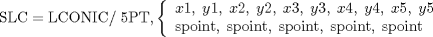
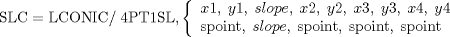

| 3.12. The Loft Conic (LCONIC) Definitions | ||
|---|---|---|
 | Chapter 3. Geometric Statements in APT |  |
| 3.12. The Loft Conic (LCONIC) Definitions | ||
|---|---|---|
| | Chapter 3. Geometric Statements in APT | |
A loft conic is a general conic expressed by a combination of five independent conditions, rather than by a mathematical expression.


| |  | |
| 3.11. The General Conic (GCONIC) Definitions |  | 3.13. The Vector (VECTOR) Definitions |